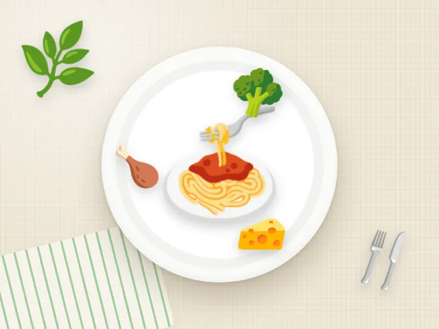

Паста с индейкой и брокколи
Ккал
446
Белки
39 г
Жиры
10 г
Углеводы
50 г
Состав на порцию
- Паста из твёрдых сортов — 150 г
- Индейка тушёная — 100 г
- Брокколи на пару — 120 г
- Оливковое масло — 5 г
- Чеснок, пармезан по желанию
Как приготовить
- Отварите пасту до состояния аль денте.
- Обжарьте нарезанную индейку с чесноком 8 минут.
- Добавьте брокколи и немного воды от пасты, тушите 4 минуты.
- Смешайте с пастой.
Калорийность и БЖУ посчитаны по составу на одну порцию. Хотите вписать паста с индейкой и брокколи в свой рацион? Посчитайте норму в калькуляторе калорий.